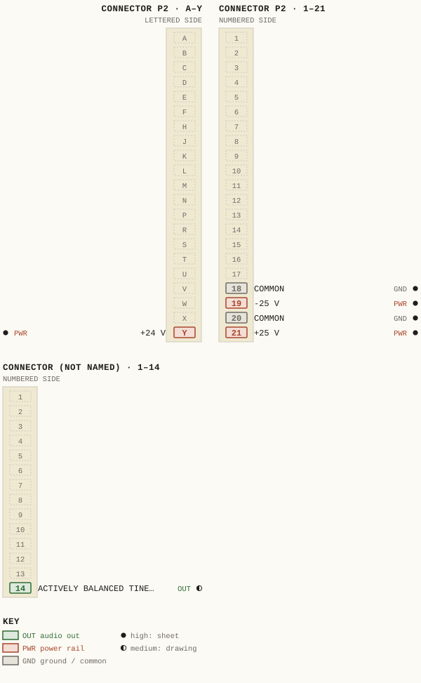
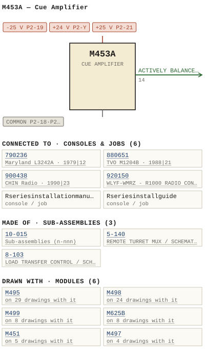

M453A — Cue Amplifier
| Type | module |
| Category | AMPLIFIERS |
| Try it | simulator & front panel · download package (zip) |
| Earliest dated evidence | 1978|11 — title-block date |
| Evidence | "ISSUE 41 APRIL 1978" in PUBLIC/Manuals + tech DOCUMENTS/Modules/M453A/WBS M453A P2(1).JPG |
| Confidence | high |
| All years found | 1978|11, 1979|12 |
| Used in jobs | 790236 (1979|12), 880651 (1988|21), 900438 (1990|23), 920150 (1992|25), Rseriesinstallationmanual, Rseriesinstallguide |
| Variants | M453 |
| Folder | Consoles/1990-1999/900438 - CHIN Radio |
| Folder | Consoles/1990-1999/920063 - KRSR Radio |
| Folder | DOCUMENTS/RECENT SCANS/WBSps.ca 20210317 - Large pile of D |
Connections
What it is made of and what it is part of.
Pictures


M453A.pinout.svg

M453A.connections.svg 1978 - M453A - P2.jpg
1978 - M453A - P2.jpg 1979 - M453A - P03 - TOC.jpg
1979 - M453A - P03 - TOC.jpg 2006 - 920063 - DOC - 920063-01-001 - MONIORMQDULE SWTCHED DIRECT SSUE REMSION.jpg
2006 - 920063 - DOC - 920063-01-001 - MONIORMQDULE SWTCHED DIRECT SSUE REMSION.jpg 2015 - DOC - PSCILLATOE MQDULE UNE SELECTOR INPUTS.jpg
2015 - DOC - PSCILLATOE MQDULE UNE SELECTOR INPUTS.jpg M453A - P03 - TOC.jpg
M453A - P03 - TOC.jpg 1978 - M453A - 453-01-002 - CUE AMPLIFIER.jpg
1978 - M453A - 453-01-002 - CUE AMPLIFIER.jpg 1978 - M453A - 453-01-002 - CUE LEVEL SUMMING INPUT SUM INSERT.jpg
1978 - M453A - 453-01-002 - CUE LEVEL SUMMING INPUT SUM INSERT.jpg 1978 - M453A - 453-02-002 - MUTE ASSIGN.jpg
1978 - M453A - 453-02-002 - MUTE ASSIGN.jpg 1978 - M453A - 453-02-002 - PUK ISSUOATE VILC.jpg
1978 - M453A - 453-02-002 - PUK ISSUOATE VILC.jpg 1978 - M453A - 453-04-006 - MUTING SMITCH SWI NHEN DEPRESSED MUEES THE EAKER.jpg
1978 - M453A - 453-04-006 - MUTING SMITCH SWI NHEN DEPRESSED MUEES THE EAKER.jpg 1978 - M453A - 453-04-006 - OPE- RATES THE ASSOC IATED DSI.jpg
1978 - M453A - 453-04-006 - OPE- RATES THE ASSOC IATED DSI.jpg 1978 - M453A - 453-06-002 - CUE AMPLIFIER COMPONENT LAYOUT.jpg
1978 - M453A - 453-06-002 - CUE AMPLIFIER COMPONENT LAYOUT.jpg 1978 - M453A - 453-06-002.jpg
1978 - M453A - 453-06-002.jpg 1978 - M453A - P01 - Cover.jpg
1978 - M453A - P01 - Cover.jpg 1978 - M453A - P02.jpg
1978 - M453A - P02.jpg 1978 - M453A - P04 - Warranty.jpg
1978 - M453A - P04 - Warranty.jpg 1978 - M453A - P05 - 1-1.jpg
1978 - M453A - P05 - 1-1.jpg 1978 - M453A - P06 - 1-2.jpg
1978 - M453A - P06 - 1-2.jpg 1978 - M453A - P07 - 2-1.jpg
1978 - M453A - P07 - 2-1.jpg 1978 - M453A - P08 - 2-2.jpg
1978 - M453A - P08 - 2-2.jpg 1978 - M453A - P09 - 3-1.jpg
1978 - M453A - P09 - 3-1.jpg 1978 - M453A - P1.jpg
1978 - M453A - P1.jpg 1978 - M453A - P10 - 3-2.jpg
1978 - M453A - P10 - 3-2.jpg 1978 - M453A - P10.jpg
1978 - M453A - P10.jpg 1978 - M453A - P11 - 3-3.jpg
1978 - M453A - P11 - 3-3.jpg 1978 - M453A - P11.jpg
1978 - M453A - P11.jpg 1978 - M453A - P12 - 3-4.jpg
1978 - M453A - P12 - 3-4.jpg 1978 - M453A - P13.jpg
1978 - M453A - P13.jpg 1978 - M453A - P17 - Pin Out.jpg
1978 - M453A - P17 - Pin Out.jpg 1978 - M453A - P3.jpg
1978 - M453A - P3.jpg 1978 - M453A - P4.jpg
1978 - M453A - P4.jpg 1978 - M453A - P5.jpg
1978 - M453A - P5.jpg 1978 - M453A - P6.jpg
1978 - M453A - P6.jpg 1978 - M453A - P7.jpg
1978 - M453A - P7.jpg 1978 - M453A - P8.jpg
1978 - M453A - P8.jpg 1978 - M453A - P9.jpg
1978 - M453A - P9.jpg 19xx - DOC - 600-02-001 - INPUT CHANNEL SCHEMA TIC.png
19xx - DOC - 600-02-001 - INPUT CHANNEL SCHEMA TIC.png 19xx - DOC - 600-02-007 - CUE CHANNEL SCHEMA TIC.png
19xx - DOC - 600-02-007 - CUE CHANNEL SCHEMA TIC.png 19xx - DOC - R1400-R2400 - 013.jpg
19xx - DOC - R1400-R2400 - 013.jpg 19xx - DOC - R1400-R2400 - 014.jpg
19xx - DOC - R1400-R2400 - 014.jpg M453A - P16 - Layout.jpg
M453A - P16 - Layout.jpg 1979 - 790236 - 790236-02-004 - CUE SPEAKER MODULE.jpg
1979 - 790236 - 790236-02-004 - CUE SPEAKER MODULE.jpg 1988 - 880651 - 12.jpg
1988 - 880651 - 12.jpg 1990 - 900438 - 900438-01-001 - OHMS MONITOR LINE DIRECT INPUT SELECTOR INPUTS SWTCHED.jpg
1990 - 900438 - 900438-01-001 - OHMS MONITOR LINE DIRECT INPUT SELECTOR INPUTS SWTCHED.jpg 1992 - 920150-01-001 - WLYF WMRZ R1000 RADIO CONSOLE FUNCTIONAL - DRN DRG - ISS 3.jpg
1992 - 920150-01-001 - WLYF WMRZ R1000 RADIO CONSOLE FUNCTIONAL - DRN DRG - ISS 3.jpg 1990 - R series installation ma - WBS R1200 R2000 instal man p7.jpg
1990 - R series installation ma - WBS R1200 R2000 instal man p7.jpg 1976 - M459 - 459-02-002 - PUT OUTPJT ISS-HOPCKD USED.jpg
1976 - M459 - 459-02-002 - PUT OUTPJT ISS-HOPCKD USED.jpg 1978 - 453-01-002 - M453A CUE AMPLIFIER FUNCTIONAL DIAGRAM - DRN P. MAHONEY - ENG RKB - ISS 3 (2).jpg
1978 - 453-01-002 - M453A CUE AMPLIFIER FUNCTIONAL DIAGRAM - DRN P. MAHONEY - ENG RKB - ISS 3 (2).jpg 1978 - 453-06-002 - M453A CUE AMPLIFIER COMPONENT LAYOUT - DRN MRW - ENG MRW - ISS 5.jpg
1978 - 453-06-002 - M453A CUE AMPLIFIER COMPONENT LAYOUT - DRN MRW - ENG MRW - ISS 5.jpg 1987 - 600-02-001 - INPUT CHANNEL SCHEMATIC - DRN JRG - ENG JRG - ISS 1.png
1987 - 600-02-001 - INPUT CHANNEL SCHEMATIC - DRN JRG - ENG JRG - ISS 1.png 1987 - 600-02-007 - CUE CHANNEL SCHEMATIC - DRN JRG - ENG GEB - ISS 1.png
1987 - 600-02-007 - CUE CHANNEL SCHEMATIC - DRN JRG - ENG GEB - ISS 1.pngPrice history
| Year | Kind | Price | Listed as | Effective | Source |
|---|---|---|---|---|---|
| 2005|38 | used market value | 25.00 | M453A Cue Amplifier | wbsps - website ARCHIVE/WBSPS 2008/ARCHIVE/old website/PriceGuide.htm | |
| 2006|39 | used market value | 25.00 | M453A Cue Amplifier | wbsps - website ARCHIVE/WBSPS 2008/ARCHIVE/jan 2006 shell/priceguide.htm |
Pinout & connections
Each contact as its own documents name it: 6 named (5 high, 1 medium confidence). An empty slot is a contact no page names. Hover a contact for its source; the table under the drawing lists them.
pinout (SVG) · connections (SVG) · pins (JSON)
Pin evidence — 6 contacts
| Pin | Signal | Kind | Confidence | Read from | Source |
|---|---|---|---|---|---|
| 14 | ACTIVELY BALANCED TINE OUTPUT also: ACTIVELY BALANCED TIN… (prose) | audio out | medium | prose | 1979 - M453A - Cue Amplifier.pdf, p. 7 “R29 may be jumpered by J1 to increase 'overati amplifier gain by 10 dB The output amplifier consists 0 f 22 with its associated components …” |
| P2-18 | COMMON | ground / common | high | rto-144 | M453A.rto144.json, p. 1 |
| P2-19 | -25 V | power rail | high | rto-144 | M453A.rto144.json, p. 1 |
| P2-20 | COMMON also: COMMON (rto-144) | ground / common | high | rto-144 | M453A.rto144.json, p. 1 |
| P2-Y | +24 V | power rail | high | rto-144 | M453A.rto144.json, p. 1 |
| P2-21 | +25 V | power rail | high | rto-144 | M453A.rto144.json, p. 1 |
Dates found in the documents


Physical manual inventory
| Item | Location | Status | Scanned |
|---|---|---|---|
| M453A | DUPLICATE | Recently scanned and stiched by WB | |
| M453A Cue Amplifier | PDF - Already scanned |
Documents (9)
Photos & scans (57)


Sub-assemblies & parts used (3)
| Item | What | Family | Year | How we know |
|---|---|---|---|---|
| 10-015 | Sub-assemblies (n-nnn) | 1988|21 | named in its manual | |
| 5-140 | REMOTE TURRET MUX / SCHEMATIC | Sub-assemblies (n-nnn) | 1976|9 | named in its manual |
| 8-103 | LOAD TRANSFER CONTROL / SCHEMATIC | Sub-assemblies (n-nnn) | 1979|12 | named in its manual |
Parts list — board M453A (24 parts)
From 1979 - M453A - Cue Amplifier.pdf, page 9 (scanned); also in timelines/data/bom.csv.
| Ref | Part | Value | Manufacturer | Mfr part no. |
|---|---|---|---|---|
| M453A | CUE AMPLIFIER | |||
| C1 | Capacitor uF/35 V Kemet | T390B105MO35AS | ||
| C7 | uF/25 V Philips | 470 | 437ETF470 | |
| C8 | uF/25 V Kemet | 47 | T390E476M02545 | |
| C13 | uF /25 V Philips | 22 | 426ETF22 | |
| C14 | pF Aselco | 3300 | co9z-MC-332m | |
| C15 | pF Philips | 68 | 2222-638-70689 | |
| C17 | PF Aselco | 4700 | ca9z-MC-472m | |
| C18 | pF Philips | 220 | 2222-630-03221 | |
| C24 | delete | |||
| CR6 | Fairchild | IN4148 | ||
| CR9 | Zener | 1N7534 | ||
| K1 | Relay Clare | MRB3A 24 | ||
| R1 | Resistor SW 15K Philips | 5 % | ||
| R26 | Potentiometer A/ B WBS | 10-015 | ||
| R27 | Resistor XW 4K7 Philips | 5 % | ||
| R31 | Resistor XW 100 Philips | 5 % | ||
| R51 | Resistor Y2W 330 | 5 % | ||
| R52 | Res istor XW 22k | 5 % | ||
| R54 | Resistor Yw 2K2 | 5 % | ||
| R55 | Resistor 5 % 10 Da ]e | 3 . 75w | CW-2B | |
| SW1 | Switch Schadow WBS | 11-005 | ||
| F1 | Fuse, Buss AGC 3/4 | 0.754 | ||
| Q2 | Fairchild | 2N3569 |
Consoles & jobs it is connected to (6)
Their own drawings name this module.
| Job | Year | Drawing | Page |
|---|---|---|---|
| 790236 | 1979|12 | 1979 - 790236 - 790236-02-004 - CUE SPEAKER MODULE.jpg | 1 |
| 880651 | 1988|21 | 1988 - 880651 - 12.jpg | 1 |
| 900438 | 1990|23 | 1990 - 900438 - 900438-01-001 - OHMS MONITOR LINE DIRECT INPUT SELECTOR INPUTS SWTCHED.jpg | 1 |
| 920150 | 1992|25 | 1992 - 920150-01-001 - WLYF WMRZ R1000 RADIO CONSOLE FUNCTIONAL - DRN DRG - ISS 3.jpg | 1 |
| Rseriesinstallationmanual | 1990 - R series installation ma - WBS R1200 R2000 instal man p7.jpg | 1 | |
| Rseriesinstallguide | 1990 - R series install guide - WBS R1200 R2000 instal man p7.jpg | 1 |

Named in other drawings & documents (9)
From the manuals
Each manual split into its sections. Text that is the same in many Ward-Beck manuals (warranty, address, standard notes) is kept once on the Boilerplate page and linked.
General description (2)
Description — 80 words · 1979 - M453A - Cue Amplifier.pdf, page 12
MFG MFG PART NUMBER R26 Knob Cap (Black) (Black) Elma 021-3520 040-3620 Swi Button (White) Schadow FG-Wh WBS recormends the use of replacement parts made by the specified manufacturers for continued optimum equipment performancc 3-4
WBS M4534 Huting Switch Ski: Vhen depressed, mutes Ehe speaker auteut c and ope: rates assoc iated DSI - LEVEL coeve?/ 0f26 : leve Sorfrer: output aP MUTE CUE IssU DATE RLYISIH WBS WAAD-BECK BySTeMS DrNPEcety ERG Ll CKD App I PSCALE M4534 CUE AMpLifIER
- source: 1979 - M453A - Cue Amplifier.pdf, p. 12
Description — 33 words · 1978 - M453A - P12 - 3-4.jpg, page 1
MFG MFG PART NUMBER R26 Knob Cap (Black) (Black) Elma 021-3520 040-3620 Swi Button (White) Schadow FG-WH WBS recorimiends the use replacement parts made by the specified manufacturers for continued optiMuM equipment performancc
- source: 1978 - M453A - P12 - 3-4.jpg, p. 1
Specifications (4)
Technical Data — 945 words · 1979 - M453A - Cue Amplifier (2).pdf, page 5
M453A CUE AMPL IFI ER
Gai n: To Li ne Ou t put: 18 dB !2 ae . To Sp e a ~ e r Out put : 35 dB ! 2 dB.
Fre quency Response: ! 1 dB f rom SO Hz to 10 kHz .
Noi se : 7S dB below 3 wat t s or +I B dBm output ( 20 Hz to 20 kHz ).
Ha r mo nic Dis to r t io n : Les s than 0.5 ~ from 100 Hz t o 5 kHz at 3 watts or T1 8 dBm out put .
Source I mpedances : Slimmi ng Input: 30. 000 ohms . bala nce d. per sourc e . All oth er I nputs : 600 ohms or les s . bala nced.
Input I mpe dances: Summ i ng In put: Les s th an 5 ohms. All ot he r Inputs: 30.000 ohms.
I nput Le vel s : Summing In put : o dBm via 30 k ohm summ ing networ ~. Al l ot he r Inputs : o dB m nom i na l. tI 8 dBm maxi mum .
Outp ut Imp edan ces : Li ne : 150 ohms. ba lanced . Speaker: Le s s t han 0 . 5 ohm. ca p s. BS W :// tp ht
1- 1
W A t=l O- B E C K SYSTEMS LT O .
TE CHNICA L DATA "4 53-' CUE A"Pl IF IER
loa d t e pede nces : line : 600 ohms , balan ce d. Speaker: 8 ohms , balanced /un balan ce d.
Output leve ls : U ne: +8 dBm nOll l na 1 . +18 dB~ ~ a x i ..u•• Speaker : 300 mi l l i wa t t s nomina l, 3 wa tt s max1. um unde r normal pr ogra. condit ions.
Powe r Requ i rement s: +25 yolts dc , 35 .A i dli ng . 325 aA a t full powe r ou tput .
A~bl e n t T e ~ p erature: o t o 60 de grees Cels i us .
n f eens to ns : 1. 6" wide x 7" hf gh x 6 .5" dee p ( 41 mm x 178 11m x 165 mill ) .
a .c ps BS W :// tp ht
1- 2
WARD -seCK S YSTEMS LTD.
CIRCU IT DESCRI PTION H4 53A CUE AM PLI FI ER
Th e M453A is I cu e ee pl t t t e r with l 3- Wl tt ou tpu t clp lbt l t t y. Pro.ision is . lde t o conn ect the l . pl i f i er ou tp ut to th e sp el ter e i t her di r ec t ly o r .i l i n i nte grll Mu t in g rel lY . I n lddi tion t o t he Spel ter output, I bll inte d, +8 d8. line out put 15 .'de I.aillbl e .
I nputs Three types of inputs a r e pre v t ded: a) SUI,,,..ing I nput: Desi gned to ope r a te f r om the cu e Mixin g bus of an audi o co nsole. b) Dir ec t In put: De s i gned t o wor k fr om an ex te r nal 600 ohm lu di o s our ce. c) Swi tc hed In put s : Two addition a l i nput s ar e provid ed , enteri ng th e module vi a soli d st a te cros s poin t switch es Z3 an d Z4. These i nputs may be uti l ize d f or i nte rcom re qui r emen ts, suc h as fr om i nnou nce boo t h or news r oom fac il it i e s . Pre ampl i fie r in d In s er t II wit h 1ts l s s oci i t ed co~p onen ts COMpri s e s the prel.pllfie r s ectton. CIO co upl es the pre amp output to t he fr ont pinel le.e l con trol R26. FrOM R26. the slgnl l i s fed t o Mod ul e co nnec t or p l n 7 , wh i ch 15 no r ma l ly s t r appe d t o pln 8 . Re MoYll of t hI s conn ection pe rMits i nse r t io n of in externa l leve l con tro l lOCi ted i t lnot he r ope r . t l ng .rea of th e co nso l e. Out put AMplif ie r Fro. pin 8 of the modu le conne ctor, the s ig nal is coup led to th e out put aMpli f ier se ct t on via Cll , R29 .nd R30. R29 Ml 1 be j UMpe r ed by Jl to i nc r e .s e ove r a l l aMpl if ier gain by 10 dB . The outp ut aMpl i f i e r co ns1sts of I2 wi t h i t s asso ciated compon ents. An act i ve l y ba lance d l i ne output is brou gh t out a .c
It module co nnector pins 14/R .fter passin g th rough CI9 , C20, ps
R41 In
- source: 1979 - M453A - Cue Amplifier (2).pdf, p. 5
Technical Data — 141 words · 1978 - M453A - P4.jpg, page 1
M453A CUE AMPLIFIER Gain: To Line Output: To Speaker Output: 18 dB +2 dB _ 35 dB +2 dB Frequency Response : t1 dB from 50 Hz to 10 kHz_ Noise: 75 dB be ]ow watts or +18 dBm output (20 Hz to 20 kHz) _ Harmonic Distortion: Less than 0 . 5% from 100 Hz to 5 kHz at 3 watts or +18 dBm output_ Source Impedances Summing Input: A11 other Inputs : 30 , 000 ohms ba lanced, per source 600 ohms or Tess ba lanced Input Impedances : Summing Input: A11 other Inputs Less than 5 ohms 30 , 000 ohms Input Levels: Summing Input: A11 other Inputs : dBm via 30k ohm s umming network _ dBm nominal +18 dBm maximum.
Output Impedances Line: Speaker: 150 ohms ba lanced _ Less than 0 . 5 ohm_ 1-1
- source: 1978 - M453A - P4.jpg, p. 1
Technical Data — 84 words · 1978 - M453A - P5.jpg, page 1
M453A CUE AMPLIFIER Load Impedances : Line: Speaker: 600 ohms ba lanced_ 8 ohms ba lanced/unbalanced _ Output Levels : Line: Speaker: +8 dBm nomina ] . +18 dBm maximum. 300 milliwatts nomina ] 3 watts maximum under norma 1 program conditions Power Requirements : +25 voTts dc 35 ma idling 325 MA at full power output Ambient Temperature: 0 to 60 degrees Celsius Dimensions 1.6" wide x 7"high 6 .
5 " deep (41 mm X 178 Mm X 165 mm) _ 1-2
- source: 1978 - M453A - P5.jpg, p. 1
- also in: 1978 - M453A - P06 - 1-2.jpg, p. 1
Circuit description (1)
Circuit Description — 250 words · 1978 - M453A - P7.jpg, page 1
M4534 CUE AMPLIFIER The 3-watt speaker output is derived from the Tower ha ] f 0 f 22 Coup led through C21 the s igna ] appears at the DIRECT output at Pin S Alternatively when muting 0 f the cue speaker is required, the SWITCHED output at pin 15 should be connected to the cue speaker The common return for the cue speaker appears at pins 16 8 T Muting The muting relay K1 is norma IIy energized Connecting the mute contro] input at pin X to CONTROL COMMON wil1 switch 0 ff Q3 , causing K1 to de-energize in turn disconnecting the output s igna] to pin 15 _ Muting can a ]s0 be achieved by operating SW1, ocated at the front pane] 0 f the modu le The LED DS 1 will be iluminated to indicate muted status Input_Crosspoints 23 and 24 are cmos ana 10g Swi tches serving a$ s0]id state crosspoints for inputs #2 and #3 _ These inputs are used for intercom app]ications and are switched from their respective remote ocations Both switches are norma]ly 0FF Connecting the contro] inputs at pins 17 or U to CONTROL COMMON Will switch the corresponding crosspoint on _ Power_Supply_Decoupling The M453A is designed to operate from sing]e 25 Vo]t regulated supply Fuse F1 is integra] to the modu ]e and Wil1 open j f power dissipation becomes excessive CRS protects the amp ]ifier from inadvertent supply vo ]tage reversa ] Additiona] filtering is provided by C7 2-2
- source: 1978 - M453A - P7.jpg, p. 1
Parts list (text) (1)
Parts List — 85 words · 1990 - M453A - DOC - CHIN Radio R14000001.pdf, page 22
WARD-BECK SYSTEMS LTD,
C H I NR A D I O
Rl4OORADIOCONSOLE
R E PLACEABLE
1,
WARD-BECK SYSTEMS LTD.
C H I NR A D I O
REPLACEABLE PARTSLIST
\'
WARD-BECK SYSTEMS LTD.
C H I NM D I O
R E PLACEABLE
:,
WARD-BECK SYSTEMS LTD.
C H I NR A D I O
R 14OO RADIO CONSOLE LIST OF SEPAMTELY SUPPLiEDSTANDARD PRODUCT MANUALS
8) t'1497 A Master Module
WARD-BECK SYSTEMS LTD.
C H I NR A D I O
DRAWIN L IGS T
Also: parts boilerplate (5 devices) · parts boilerplate (5 devices) · parts boilerplate (5 devices) · parts boilerplate (5 devices) · parts boilerplate (5 devices) · parts boilerplate (5 devices) · parts boilerplate (5 devices) · parts boilerplate (5 devices) · parts boilerplate (5 devices) · parts boilerplate (5 devices) · parts boilerplate (5 devices) · parts boilerplate (5 devices) · parts boilerplate (5 devices) · parts boilerplate (5 devices) · parts boilerplate (5 devices) · parts boilerplate (5 devices) · parts boilerplate (5 devices) · parts boilerplate (5 devices) · parts boilerplate (5 devices) · parts boilerplate (5 devices) · parts boilerplate (5 devices) · parts boilerplate (5 devices) · parts boilerplate (5 devices) · parts boilerplate (5 devices) · parts boilerplate (5 devices) · parts boilerplate (5 devices) · parts boilerplate (5 devices) · parts boilerplate (5 devices) · parts boilerplate (5 devices)
- source: 1990 - M453A - DOC - CHIN Radio R14000001.pdf, p. 22
Drawings (19)
Each scan with its trace laid over it: the slider runs from the scan to the vector drawing. Click one to see it large and save it as SVG, DXF, KiCad, PDF or PowerPoint.
Cue Amplifierviewer
Cue Level Summing Input Sum Insertviewer
Moniormqdule Swtched Direct Ssue Remsionviewer
Mute Assignviewer
Puk Issuoate Vilcviewer
Input Channel Schema Ticviewer
Cue Channel Schema Ticviewer
Cue Amplifier Component Layoutviewer
1978 - M453A - 453-06-002viewer
Muting Smitch Swi Nhen Depressed Muees The Eakerviewer
Ope- Rates The Assoc Iated Dsiviewer
Pscillatoe Mqdule Une Selector Inputsviewer
M453A - P16 - Layoutviewer
Read from the drawing title blocks.
| Drawing | Title | Date | Drawn by | Checked by | Iss. | Source |
|---|---|---|---|---|---|---|
| — | Pscillatoe Mqdule Une Selector Inputs | DRG | file | |||
| — | file | |||||
| — | file | |||||
| 453-01-002 | Cue Amplifier | 3 | file | |||
| 453-01-002 | Cue Amplifier | file p.14 | ||||
| 453-01-002 | Cue Level Summing Input Sum Insert | P MAHONSY | 3 | file p.14 | ||
| 453-01-002 | Cue Level Summing Input Sum Insert | RXU | 3 | file | ||
| 453-02-002 | Mute Assign | MRW | B | file | ||
| 453-02-002 | Cue Amplifier Schematic Issve | file p.15 | ||||
| 453-02-002 | Puk Issuoate Vilc | MRW | file | |||
| 453-04-006 | Huting Switch Ski Vhen Depressed Mutes Ehe Speaker | U | file p.13 | |||
| 453-04-006 | Muting Smitch Swi Nhen Depressed Muees The Eaker | file | ||||
| 453-04-006 | Ope- Rates The Assoc Iated Dsi | file | ||||
| 453-06-002 | file | |||||
| 453-06-002 | Cue Amplifier Component Layout | MRW | file p.16 | |||
| 453-06-002 | Cue Amplifier Component Layout | file | ||||
| 600-02-001 | Input Channel Schema Tic | JRG | I | file | ||
| 600-02-007 | Cue Channel Schema Tic | JRG | B | file | ||
| 920063-01-001 | Moniormqdule Swtched Direct Ssue Remsion | file |